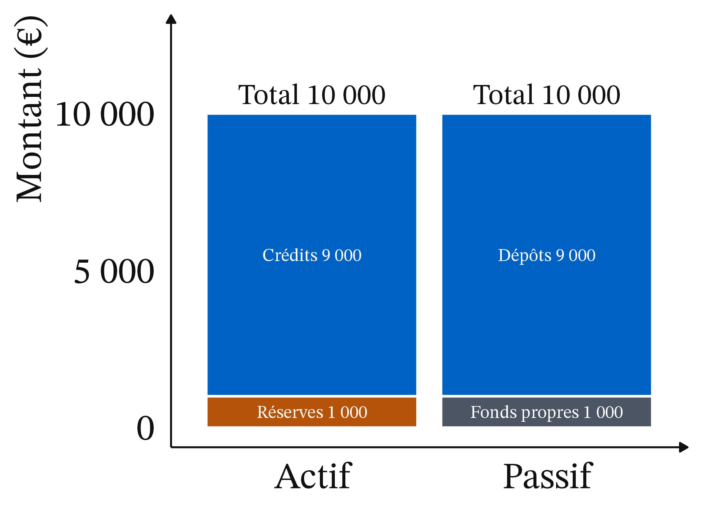
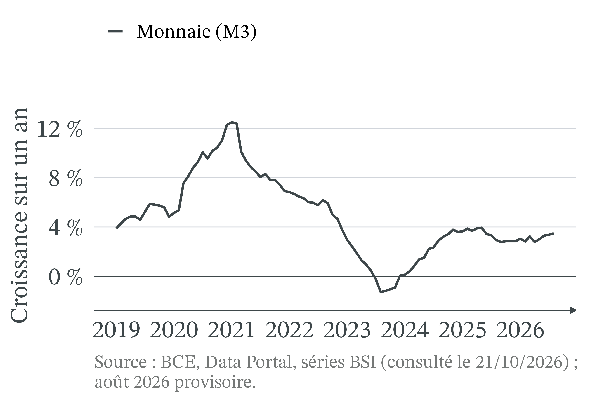
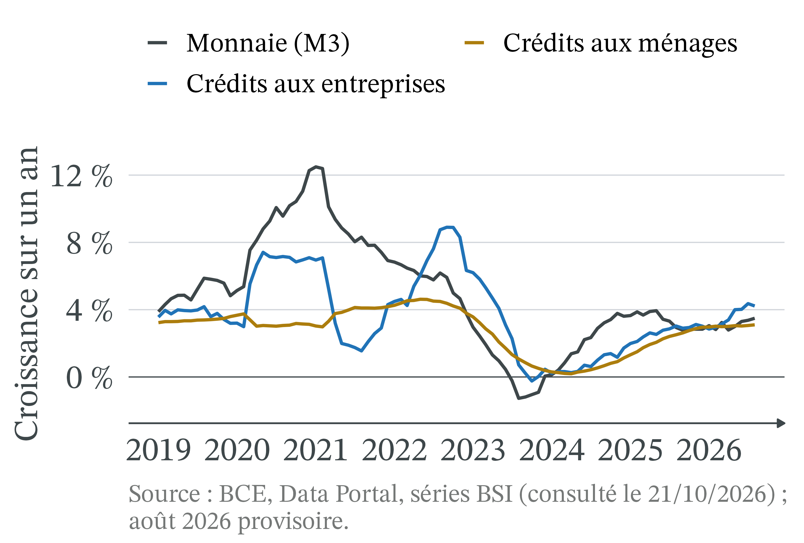
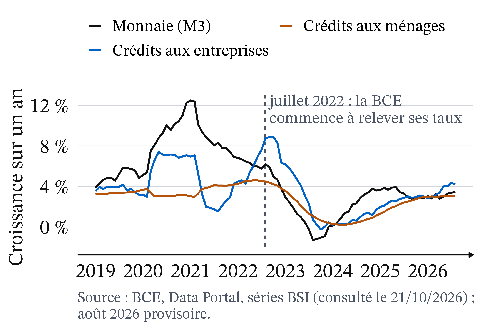
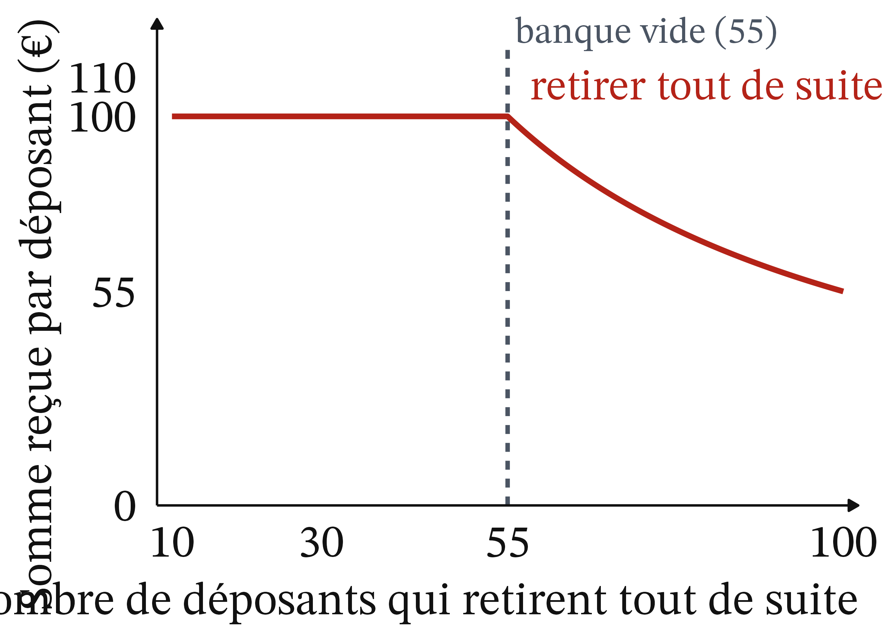
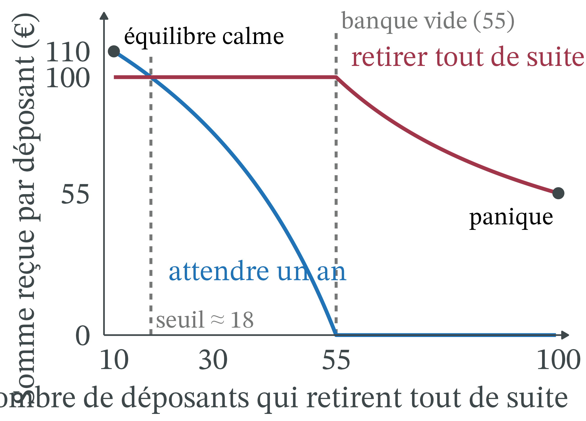
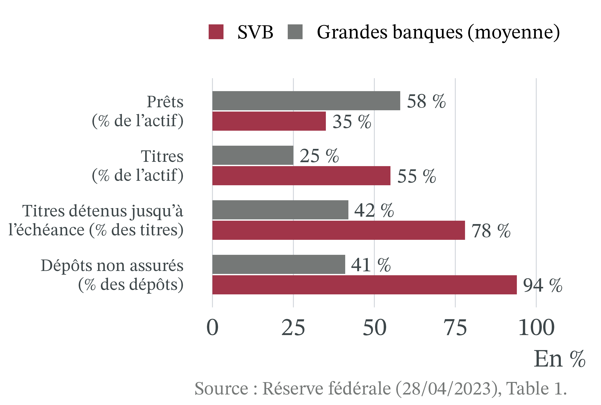
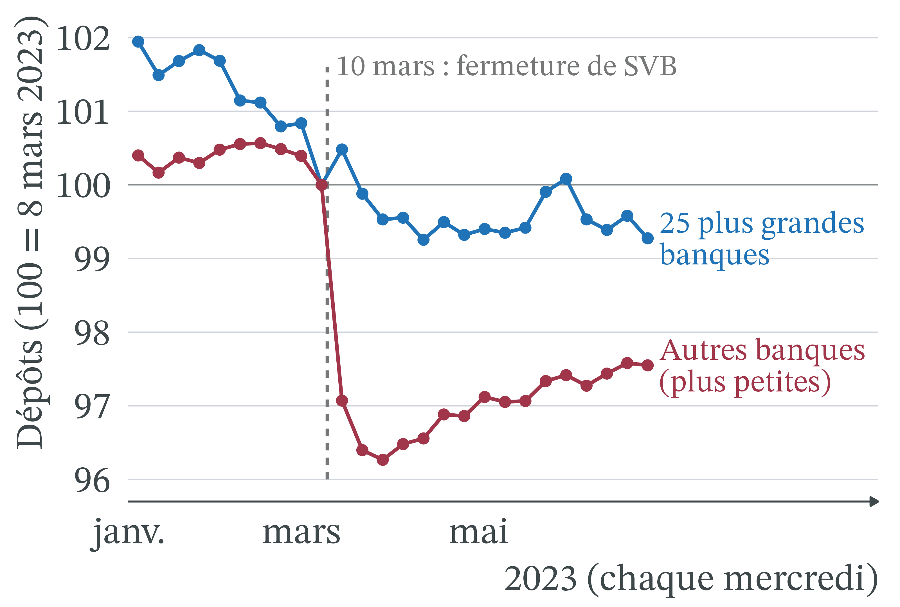

Si l’essentiel de la monnaie n’est pas fait de billets, qui la crée, et comment ?
Pourquoi une banque qui fonctionne peut-elle disparaître en quarante-huit heures ?
Premier outil : le bilan bancaire, pour suivre ce que fait un prêt.
Second outil : le jeu de la panique (Diamond et Dybvig, 1983), pour comprendre la ruée des déposants.
Rappel : monnaie, bilan, taux d’intérêt, positif et normatif
Monnaie : ce que tout le monde accepte en paiement ; elle sert à échanger, à compter les valeurs (unité de compte) et à garder du pouvoir d’achat pour plus tard (réserve de valeur).
Bilan : à une date donnée, ce qu’un agent possède (actif) et la façon dont il l’a financé (passif : dettes et fonds propres). Total de l’actif = total du passif.
Taux d’intérêt : le prix d’un emprunt, en % de la somme empruntée, par an.
Positif : ce qui est ou sera ; normatif : ce qui devrait être, à partir de valeurs.
Banque d’Angleterre (2014) : ce sont les crédits qui font les dépôts
Michael McLeay, Amar Radia et Ryland Thomas (2014), « Money creation in the modern economy », Bank of England Quarterly Bulletin · Banque d’Angleterre. Quand une banque accorde un prêt, elle crédite le compte de l’emprunteur : elle crée un dépôt nouveau, donc de la monnaie, au lieu de prêter l’épargne d’autres clients.
La banque centrale ne fixe pas directement la quantité de monnaie : elle l’influence surtout par le taux d’intérêt.
Au Royaume-Uni, les dépôts bancaires représentaient alors 97 % de la monnaie détenue par les ménages et les entreprises.
Les formes de la monnaie : fiduciaire, scripturale, de banque centrale
Définition 1 (Les formes de la monnaie)
La monnaie fiduciaire désigne les billets et les pièces.
La monnaie scripturale désigne les dépôts à vue sur des comptes bancaires, que l’on dépense par carte, virement ou chèque : c’est une dette de la banque envers son client.
La monnaie de banque centrale comprend les billets et les réserves, c’est-à-dire l’argent que les banques détiennent sur leur propre compte à la banque centrale et qu’elles utilisent pour se payer entre elles.
Masse monétaire (1/2) : M1, billets, pièces et dépôts à vue
Définition 2 (Masse monétaire (M1)) La masse monétaire est la quantité de monnaie détenue par les ménages et les entreprises d’une zone. M1 regroupe les billets, les pièces et les dépôts à vue.
Août 2026 : six fois plus de dépôts à vue que de billets.
Masse monétaire (2/2) : M3 ajoute l’épargne à court terme
M3 ajoute à M1 les placements à court terme presque aussi faciles à utiliser : livrets d’épargne, dépôts à terme courts, parts de fonds monétaires.
Dépôts à vue et épargne à court terme : 84 % de M3.
L’essentiel de la monnaie est une inscription sur un compte.
Création et destruction monétaires : le crédit crée, le remboursement détruit
Définition 3 (Création et destruction monétaires) Une banque crée de la monnaie quand elle accorde un crédit en inscrivant son montant sur le compte de l’emprunteur. En échange, elle détient une créance : l’emprunteur lui doit la somme, plus les intérêts. Quand le crédit est remboursé, le dépôt et la créance disparaissent ensemble : la monnaie est détruite.
Un prêteur qui n’est pas une banque (un fonds, un particulier) ne crée pas de monnaie : il prête de l’argent qui existe déjà (La finance pour tous, 01/04/2026).
Le prêt de Léa (1/3) : avant le prêt, un bilan équilibré
Léa, étudiante, demande à sa banque, la banque A, un prêt de 1 000 € pour acheter un scooter.
Le prêt de Léa (2/3) : le prêt crée un dépôt nouveau
La banque inscrit 1 000 sur le compte de Léa : dépôts de 9 000 à 10 000.
Léa lui doit 1 000 : crédits de 8 000 à 9 000.
Réserves inchangées, aucun autre compte en baisse : 1 000 € de monnaie nouvelle.
Le prêt de Léa (3/3) : payer la banque B coûte des réserves

Léa paie le vendeur, client de la banque B : son dépôt de 1 000 passe à B.
A règle B en lui transférant 1 000 de réserves : chez A, dépôts 9 000, réserves 1 000.
La monnaie créée est maintenant sur le compte du vendeur.
Le remboursement détruit la monnaie ; le dépôt naît du prêt
Plus tard, Léa rembourse son prêt avec son salaire d’été. Son dépôt baisse de 1 000 et la créance de la banque aussi : la monnaie créée est détruite.
Bilan de l’exemple
Le crédit a créé la monnaie, au moment du prêt.
La banque a eu besoin de réserves seulement quand l’argent est parti vers une autre banque, au moment du paiement.
« Une banque ne prête que l’argent que ses clients ont déposé. »
Faux pour une banque : le dépôt naît du prêt (crédits et dépôts +1 000).
Création monétaire : trois limites, la dernière fixée par la banque centrale
L’erreur inverse : « la banque crée de l’argent sans limite ».
La banque elle-même : chaque prêt doit être rentable face aux banques concurrentes, et risqué le moins possible ; la réglementation impose des fonds propres et un minimum d’actifs liquides.
Les ménages et les entreprises : ils peuvent détruire la monnaie aussitôt créée, par exemple en remboursant d’autres crédits.
La politique monétaire : la banque emprunte ses réserves au taux que fixe la banque centrale, qui rend le crédit plus ou moins cher.
Croissance de M3 en zone euro, 2019-2026 : accélération puis recul

2020, crise sanitaire : M3 accélère jusqu’à +12,5 % sur un an en janvier 2021.
Août 2023 : −1,3 % sur un an ; la quantité de monnaie a reculé par rapport à août 2022.
Août 2026 : +3,5 %.
Crédits et monnaie évoluent ensemble depuis 2019

2020 : les crédits aux entreprises s’accélèrent, et M3 avec eux.
Septembre 2022 : crédits aux entreprises au sommet, +8,9 %.
Octobre 2023 : légère baisse, −0,2 % ; crédits aux ménages vers +0,2 % en 2024.
Après la hausse des taux de juillet 2022, crédit et monnaie ralentissent

27 juillet 2022 : la BCE relève ses taux pour la première fois depuis 2011 (raisons : CM 7).
Moins de crédits nouveaux, des remboursements qui continuent : de la monnaie est détruite.
Lecture du graphique : un mouvement commun, pas une preuve
Ce n’est pas une preuve au sens strict : d’autres causes jouent en même temps.
La banque centrale crée aussi des dépôts quand elle achète des titres sur les marchés (Banque d’Angleterre, 2014) : une autre source de monnaie, absente du graphique.
Mais le mouvement commun du crédit et de la monnaie est celui que prévoit la théorie : quand le crédit cale, la création monétaire cale.
Achats de titres par la BCE (2015-2022) : les réserves des banques montent avec eux
Fin 2014 → juin 2022 : titres détenus de 217 à 4 964 Md€.
Réserves des banques : de 300 à 4 799 Md€ (octobre 2022).
Depuis, les deux reculent : 3 311 et 2 291 Md€ au 16/10/2026.
Douglas W. Diamond et Philip H. Dybvig (1983), « Bank Runs, Deposit Insurance, and Liquidity », Journal of Political Economy · économie bancaire, « Nobel » 2022. Une banque reçoit des dépôts retirables à tout moment et accorde des prêts remboursés plus tard.
Si chacun craint que les autres retirent, tous se précipitent : une banque saine peut tomber, sauf si une garantie des dépôts supprime la raison de se précipiter.
Transformation des échéances : utile, mais source de fragilité
Définition 4 (Transformation des échéances) La transformation consiste à financer des prêts longs (un crédit immobilier sur 20 ans, une obligation à 10 ans) avec des ressources courtes (des dépôts retirables à tout moment). Elle est utile aux déposants comme aux emprunteurs, mais elle rend la banque fragile.
Le bilan de la banque A le montre déjà : les dépôts sont exigibles tout de suite, les crédits ne rapportent qu’à terme.
Liquidité et solvabilité : une banque solvable peut manquer de liquidité
Définition 5 (Liquidité et solvabilité)
Une banque est solvable si ce qu’elle possède vaut plus que ce qu’elle doit : ses fonds propres sont positifs.
Elle est liquide si elle peut payer tout de suite ce qu’on lui réclame.
Une banque solvable peut manquer de liquidité : ses prêts finiront par être remboursés, mais pas aujourd’hui.
Panique bancaire : une ruée auto-réalisatrice
Définition 6 (Panique bancaire) Une panique bancaire est une ruée des déposants qui veulent retirer leur argent en même temps, parce qu’ils craignent que la banque ne puisse pas payer tout le monde. Elle est auto-réalisatrice : la crainte d’une faillite peut suffire à la provoquer.
La crainte d’un retrait des autres provoque les retraits qu’elle redoutait.
Diamond et Dybvig en tirent un petit jeu, chiffré ici avec des nombres ronds.
Exemple : le jeu de la panique, les hypothèses
Une banque fictive : 100 déposants, qui ont chacun déposé 100 €.
Réserves : 1 000 € ; prêts aux entreprises : 9 000 €, remboursés dans un an avec 10 % d’intérêts.
Contrat de dépôt : « 100 € tout de suite, ou 110 € dans un an. »
Chaque année, 10 déposants ont besoin de leur argent tout de suite.
Vendus en urgence, les prêts ne rapportent que la moitié de leur montant.
Jeu de la panique (1/3) : en temps calme, attendre rapporte 110 €
Les 10 déposants pressés retirent 10 × 100 = 1 000 € : les réserves suffisent.
Dans un an, les prêts rapportent 9 000 × 1,10 = 9 900 €.
Partagés entre les 90 autres : 9 900 ÷ 90 = 110 € chacun.
Tout le monde est payé : la banque est solvable.
Jeu de la panique (2/3) : avec 30 retraits, attendre rapporte 79 €
Une rumeur : 30 déposants retirent tout de suite. Il faut 3 000 €.
Les réserves donnent 1 000 € ; il manque 2 000 €. La banque vend 4 000 € de prêts à moitié prix.
Il reste 9 000 − 4 000 = 5 000 € de prêts : 5 000 × 1,10 = 5 500 € dans un an.
Pour chacun des 70 qui attendent : 5 500 ÷ 70 ≈ 79 €, moins que 100 € : chacun a intérêt à retirer.
Jeu de la panique (3/3) : si tous retirent, 55 premiers servis
Si tous veulent retirer, la banque peut verser au plus 1 000 + 9 000 ÷ 2 = 5 500 €.
Les 55 premiers sont servis ; les 45 suivants ne reçoivent rien.
Retirer en premier devient la seule protection.
La leçon : la banque, ses prêts et ses clients sont les mêmes dans les deux cas. Seules les anticipations changent.
Le jeu en graphique (1/4) : retirer rapporte 100 € jusqu’à 55 retraits

En abscisse, le nombre de déposants qui retirent tout de suite ; en ordonnée, la somme moyenne reçue.
Retirer : 100 € tant que la banque peut payer.
À partir de 55 retraits, la banque est vide : 55 € en moyenne pour 100 retraits.
Le jeu en graphique (2/4) : attendre rapporte 110 €, puis moins
Chaque retrait de plus oblige à vendre des prêts à moitié prix : il reste moins à partager.
À 55 retraits, attendre ne rapporte plus rien.
Le jeu en graphique (3/4) : dès 18 retraits, attendre rapporte moins que retirer
Les deux courbes se croisent vers 18 retraits.
Au-delà, attendre rapporte moins que retirer : chacun a intérêt à retirer.
Facultatif : si N déposants retirent (entre 10 et 55), celui qui attend reçoit \(\dfrac{12\,100 - 220\,N}{100 - N}\), égal à 100 € pour N = 17,5.
Le jeu en graphique (4/4) : deux équilibres, le calme et la panique

Calme : 10 retraits, 110 € pour qui attend.
Panique : tous retirent, 55 € en moyenne ; retirer en premier devient la seule protection.
La banque est la même : seules les anticipations font passer d’un équilibre à l’autre.
Garantie des dépôts : une promesse crédible empêche la panique
Définition 7 (Garantie des dépôts) La garantie des dépôts est la promesse, faite par un fonds ou par l’État, de rembourser les déposants jusqu’à un plafond si leur banque fait faillite. En France, le plafond est de 100 000 € par client et par banque (FGDR, consulté le 21/10/2026).
Un fonds garantit 110 € à ceux qui attendent : personne n’a plus de raison de se précipiter.
Seuls les 10 déposants pressés retirent : la garantie n’a même pas à servir.
Le cercle de la panique : Northern Rock, Brighton, septembre 2007
Surtout des obligations longues : un portefeuille acheté 91 milliards n’en valait plus que 76 fin 2022, environ −16 % (The Conversation, 13/03/2023).
SVB fin 2022 (2/2) : 94 % des dépôts non garantis

Garantie publique américaine : 250 000 dollars par déposant (The Conversation, 13/03/2023). Clients de SVB : start-up et fonds, aux comptes bien plus gros.
94 % des dépôts non garantis, contre 41 % : pour eux, attendre, c’était risquer d’en perdre une partie.
SVB, mars 2023 : une rumeur rapide, une garantie étendue après coup
8 mars : SVB annonce une perte de 1,8 Md$ et cherche du capital.
9 mars : poussés par les réseaux sociaux, des clients très liés retirent 40 Md$ « de manière coordonnée ».
Aussi des « inquiétudes fondamentales » : la panique a transformé une fragilité en faillite en deux jours.
12 mars : tous les déposants, garantis ou non, récupéreront l’intégralité de leurs dépôts.
Mars 2023 : les dépôts quittent les petites banques américaines, pas les grandes

Du 8 au 15 mars 2023, banques hors des 25 plus grandes : −2,9 % de dépôts (149 Md$).
25 plus grandes : +0,5 %.
Une partie des déposants semble se replier vers les plus grandes banques.
Source : Réserve fédérale, H.8, via FRED, données corrigées des variations saisonnières (consulté le 22/10/2026).
Effets de répartition : petits déposants couverts, gros déposants exposés
Par revenu : plafond de 100 000 € par client et par banque ; un ménage qui a moins est couvert en entier (FGDR).
Les gros déposants, entreprises ou ménages aisés, ne le sont que jusqu’au plafond : ils ont intérêt à fuir les premiers.
L’extension de mars 2023 chez SVB a donc surtout protégé de gros déposants.
Création monétaire : un gain pour les banques et pour leurs emprunteurs
Créer de la monnaie rapporte aux banques.
Leur gain n’est pas la totalité des intérêts : c’est l’écart entre le taux de leurs prêts et le coût de leurs ressources (dépôts rémunérés, réserves empruntées).
En contrepartie, elles portent le risque que l’emprunteur ne rembourse pas.
Les emprunteurs peuvent acheter tout de suite un logement, une machine ou un scooter, sans attendre d’avoir épargné.
Controverse : création monétaire bancaire et privilège des banques
Analyse positive (ce qui est : mécanismes et effets, vérifiables)
Les banques créent l’essentiel de la monnaie en prêtant ; un remboursement la détruit.
Chaque dépôt nouveau a pour contrepartie une dette de l’emprunteur. Limites : rentabilité, réglementation, politique monétaire.
Analyse normative (ce qui devrait être : dépend de jugements de valeur)
Est-il juste que des banques privées touchent des intérêts sur une monnaie qu’elles créent ?
Qui doit choisir qui reçoit du crédit : les banques, la banque centrale, l’État ?
Deux écoles : monnaie exogène ou monnaie endogène
Multiplicateur de crédit (nombreux manuels) : la banque centrale fixe la quantité de monnaie de banque centrale, que les banques « multiplient » en prêtant les dépôts reçus. Monnaie exogène, vision proche de la tradition monétariste (CM 7).
Post-keynésiens (Moore, 1988 ; Howells, 1995) : monnaie endogène, créée à la demande de crédit.
Banque d’Angleterre (2014) : de ce côté ; les banques décident d’abord de prêter, et les réserves suivent.
Controverse : garantir tous les dépôts, entre stabilité et aléa moral
Analyse positive (ce qui est : mécanismes et effets, vérifiables)
Une garantie crédible empêche la panique, mais peut inciter la banque au risque : c’est l’aléa moral, celui qui est assuré se comporte de façon plus risquée.
Analyse normative (ce qui devrait être : dépend de jugements de valeur)
Relever le plafond, au risque de couvrir des déposants riches, ou le garder bas, au risque de nouvelles paniques ?
Et le droit : le Fonds de garantie des dépôts et de résolution
Le Fonds de garantie des dépôts est créé par la loi n° 99-532 du 25 juin 1999 (article 65), après la défaillance du Crédit martiniquais. Devenu FGDR, il rembourse jusqu’à 100 000 € par client et par établissement, sous 7 jours ouvrables depuis la directive européenne 2014/49/UE.
Depuis la loi n° 2018-700 du 3 août 2018, les sommes confiées à un émetteur de monnaie électronique sont aussi protégées jusqu’à 100 000 €, si elles sont placées sur un compte à part dans une banque.
À retenir
La monnaie, ce sont surtout des dépôts : billets et pièces font environ 9 % de M3 (BCE, août 2026).
Ce sont les crédits qui font les dépôts : une banque crée de la monnaie en prêtant, et un remboursement la détruit.
La création monétaire a des limites, surtout les taux de la banque centrale.
Une banque solvable peut quand même manquer de liquidité.
Une panique bancaire est auto-réalisatrice ; chez SVB, elle a achevé une banque fragilisée.
La garantie des dépôts empêche la panique ; jusqu’où garantir relève d’un jugement normatif.
Plan de dissertation : l’apport des outils, puis leurs limites normatives
Sujet : faut-il garantir tous les dépôts bancaires ?
I. Ce que disent les outils (positif)
A. Le bilan : le crédit crée des dépôts exigibles tout de suite.
B. Le jeu : une garantie crédible écarte la panique, au prix d’un aléa moral.
II. Ce qu’ils ne tranchent pas (normatif)
A. Où placer le plafond : stabilité immédiate ou long terme ?
B. Garantir davantage, ou mieux surveiller les banques ?


 2022 · Maison Blanche, domaine public, Wikimedia Commons
2022 · Maison Blanche, domaine public, Wikimedia Commons
 2025 · Xuthoria, CC BY-SA 4.0, recadré, Wikimedia Commons
2025 · Xuthoria, CC BY-SA 4.0, recadré, Wikimedia Commons